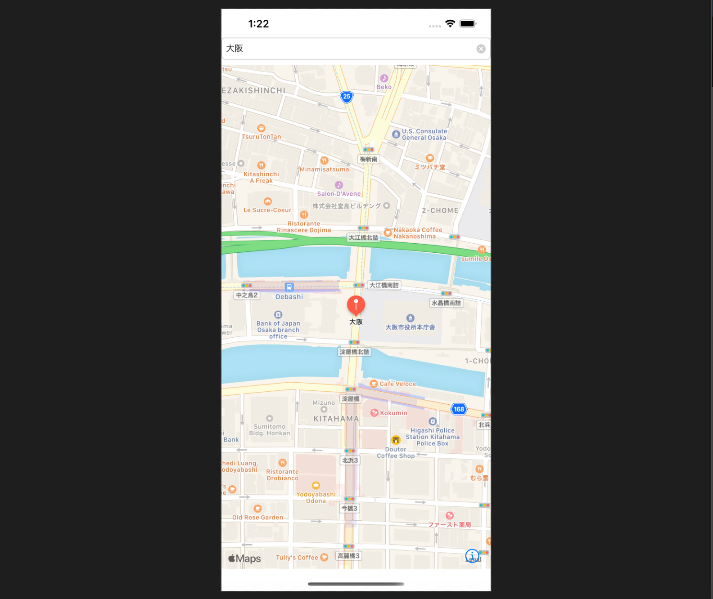

☰
Home
Profile
Twetter
GitHub

Swiftの学習の際にyoutubeやネットの情報を頼りに作成したiPhoneのマップアプリです。
delegateについての学習をメインに作成しました。
マップの切り替えは標準の地図から航空写真→３D写真→交通機関と右下のボタンで変更可能です。
※練習で作成したものなのでAppStore等にはあげていません。
スクールで作成した成果物です。
担当した箇所はカテゴリー機能、パンくず機能、新規登録機能がメインで、その他出品機能、編集機能等は一部携わりました。主にエラー解決など。
チームではスクラムマスターをさせていただき、非常に勉強になりました。
当サイトです。成果物が増え次第随時更新していきます。
使用言語はHTML,CSS,javascriptです。
source
page